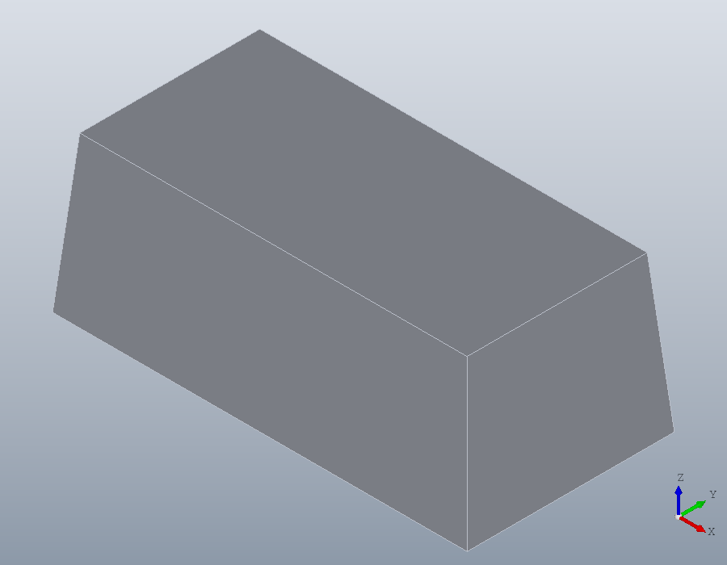
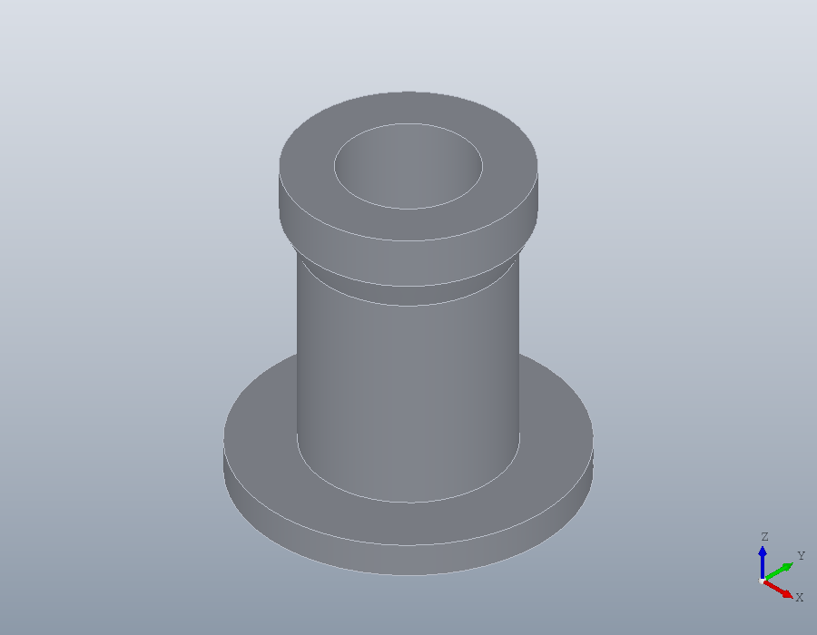
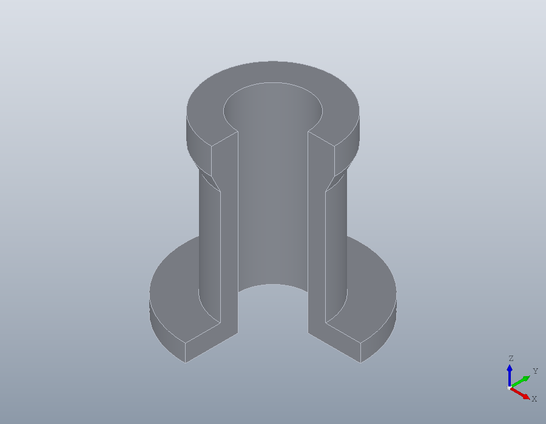
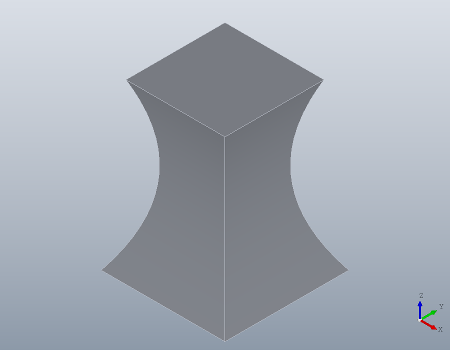
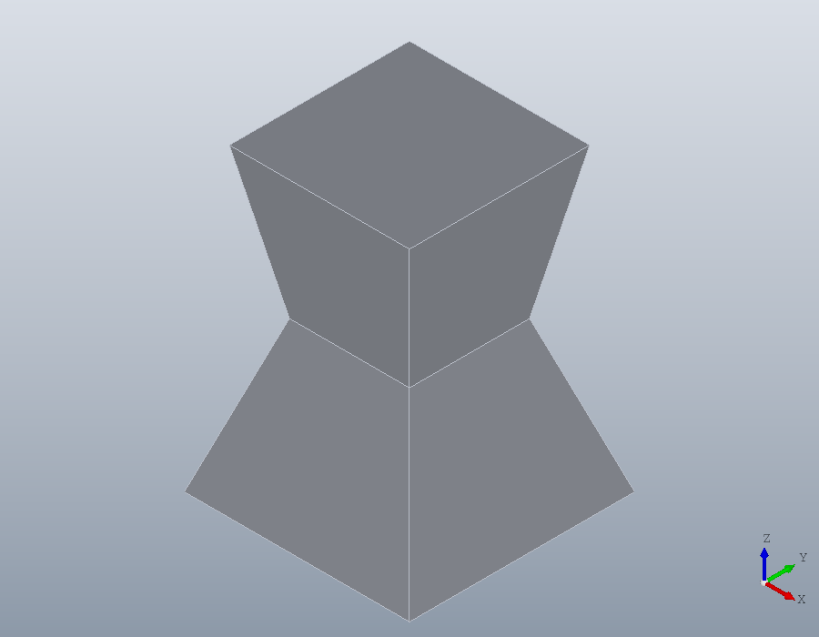
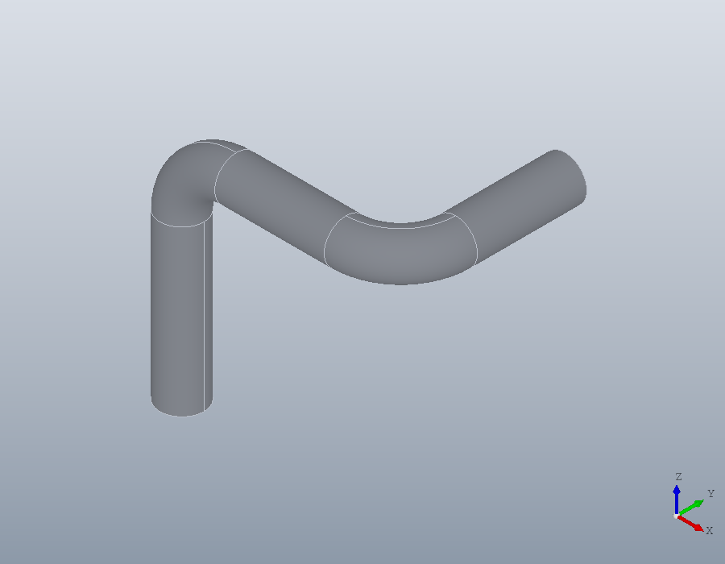
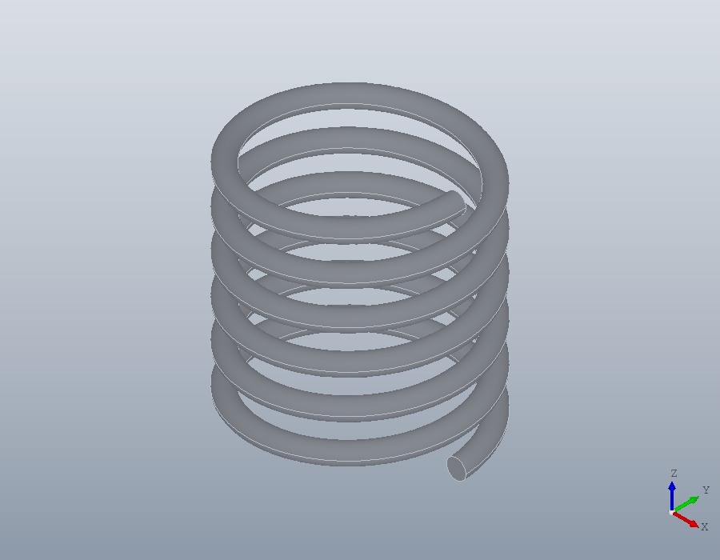

Solids from regions
Five ways to turn a flat region into a solid: raise it, turn it, pass a surface through several of it, carry it along a path, and coil it. Each makes the solid where the region's plane puts it.
Extrude
solid.extrude raises a region square to its plane. A positive height goes along the plane's normal, a negative one against it, and a pair of heights goes both ways. 'Taper' leans the walls inwards by an angle, the draft a moulded or cast part needs to leave its mould.
R = geom.Region ([0, 0; 40, 0; 40, 20; 0, 20]);
S = solid.extrude (R, 15, 'Taper', 5);
show (S);
'Twist' turns the region about its origin as it rises, and 'Scale' shrinks or grows it towards the far end. A square 20 across, centred on its origin, turned a quarter turn and halved over 40 millimetres:
sq = geom.Region ([-10, -10; 10, -10; 10, 10; -10, 10]);
T = solid.extrude (sq, 40, 'Twist', 90, 'Scale', 0.5);
show (T);
Revolve
solid.revolve turns a region about the y axis of its plane. The region is the half section of a turned part, drawn as on a drawing: x is the radius, y the distance along the axis. For a part standing on the z axis, draw the section in the xz plane, whose y axis is the world's z. A bush 16 across inside, with a flange at its foot and a collar at its head:
xz = geom.UCS ([0, -1, 0], [0, 0, 0]);
H = geom.Region ([8, 0; 20, 0; 20, 4; 12, 4; 12, 30; 14, 34; 14, 40; ...
8, 40]);
H.UCS = xz;
K = solid.revolve (H);
show (K);
An angle turns it part of the way round, from the region's own plane. Three quarters of a turn opens the part to show its section, and leaves three quarters of the material.
K2 = solid.revolve (H, 270);
volume (K2) / volume (K)
show (K2);ans = 0.7500
Loft
solid.loft passes a solid through several regions in turn, each where its own plane lies. Three squares, 30, 16 and 24 across, at heights 0, 20 and 40:
base = geom.Region ([-15, -15; 15, -15; 15, 15; -15, 15]);
mid = geom.Region ([-8, -8; 8, -8; 8, 8; -8, 8]);
mid.UCS = geom.UCS ([0, 0, 1], [0, 0, 20]);
tip = geom.Region ([-12, -12; 12, -12; 12, 12; -12, 12]);
tip.UCS = geom.UCS ([0, 0, 1], [0, 0, 40]);
A = solid.loft ({base, mid, tip});
show (A);
By default one smooth surface passes through every section, so the waist is curved. With 'Ruled' each pair of sections is joined by straight lines instead: flat faces, and a crease at the middle section.
B = solid.loft ({base, mid, tip}, 'Ruled', true);
show (B);
Sweep
solid.sweep carries a region along a geom.Path. A region in the xy plane is swept as drawn along a path that starts at the origin and runs up the z axis. A ring 8 across with a bore of 6 is the section of a tube. The path's corners would be mitred, as two sawn lengths are joined; fillet rounds them into bends of radius 10.
ring = geom.Region ([4, 0, 1; -4, 0, 1], {[3, 0, 1; -3, 0, 1]});
P = geom.Path ([0, 0, 0; 0, 0, 40; 40, 0, 40; 40, 30, 40]);
P = fillet (P, 10);
tube = solid.sweep (ring, P);
show (tube);
Helix
solid.helix turns a region about the y axis of its plane as solid.revolve does, but rises as it turns, by the pitch on every turn. A circle of wire 2 across, its centre 10 from the axis, makes a spring of mean diameter 20: six turns at a pitch of 4.
wire = geom.Region ([9, 1, 1; 11, 1, 1]);
wire.UCS = xz;
spring = solid.helix (wire, 4, 6);
show (spring);